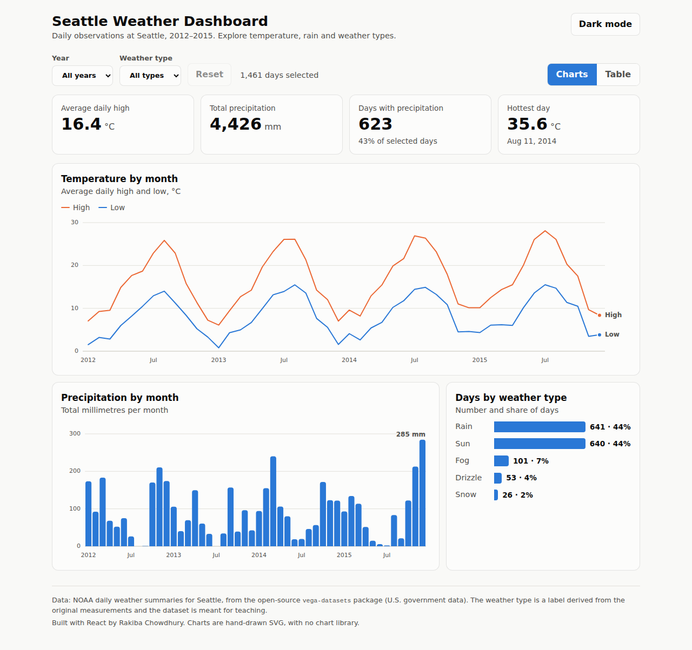
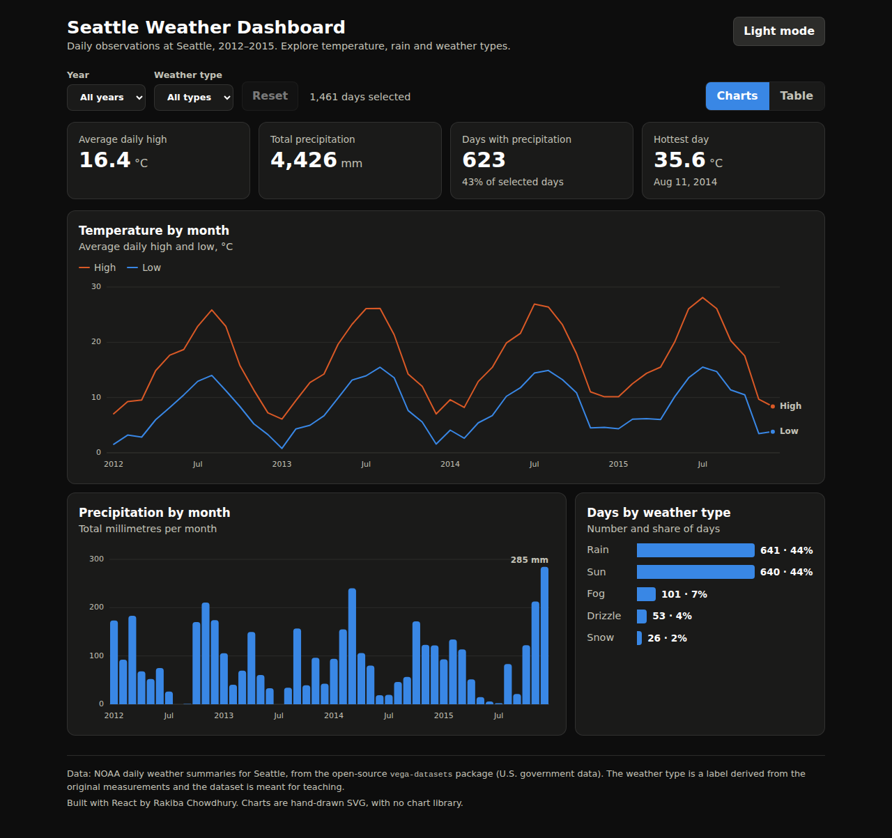
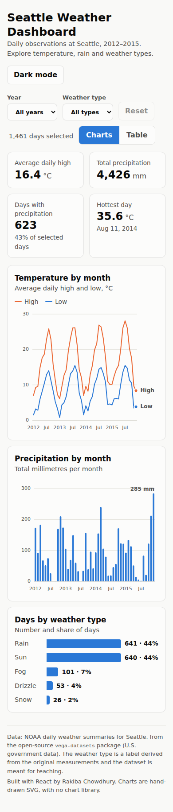

An interactive dashboard for exploring four years of daily weather in Seattle (1,461 days, 2012–2015). Choose a year and a weather type, and the summary tiles, three charts and a data table all update together.
I'm applying for web developer and data analyst roles, and I wanted one project that shows both sides: React for the interface and data analysis for the numbers. I used real public data so every figure can be checked, and I drew the charts in SVG myself, without a chart library, to understand how they work.
I built this with an AI coding assistant, then read, tested and changed the code so I can explain how each part works.

Light mode: filters, summary tiles, temperature line chart, precipitation columns and weather-type bars.

Dark mode: the same dashboard with its own colours checked for contrast and colour-blind safety.

Phone layout: tiles and charts stack into one column.
useMemo so numbers are recalculated only when filters change, and a custom hook for keyboard and pointer focus on chartsDaily weather summaries for Seattle from NOAA, taken from the open-source vega-datasets package (U.S. government data). The weather type (sun, rain, snow and so on) was derived from the original measurements by the dataset's authors, and the dataset is intended for teaching, so treat the numbers as an example rather than an official climate record.
React 18 · JavaScript · SVG · Vite · Vitest · CSS · GitHub Actions & GitHub Pages